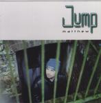

Home Artist links Label link

| Artist: | Jump |
| Title: | Matthew |
| Label: | Cyclops CYCL 089 |
| Length(s): | 50 minutes |
| Year(s) of release: | 2000 |
| Month of review: | 07/2000 |
Line up
Mo - keyboards
Steve Hayes - electric and acoustic guitars
Pete Davies - electric and acoustic guitars
Andy Barker - drums
Andy Faulkner - bass
John Dexter Jones - vocals
Tracks
| 1) | It's Your Life | 4.22
|
| 2) | Moscow Circus | 5.27
|
| 3) | Everybody Stop | 3.32
|
| 4) | Matthew | 5.57
|
| 5) | The Highwayman | 5.03
|
| 6) | Alone Ahead | 4.36
|
| 7) | Nine Sisters | 4.42
|
| 8) | Tongue Tied | 4.07
|
| 9) | Paradise Mislaid | 4.26
|
| 10) | The Nearly Ended World | 7.55
|
Summary
A quick new studio release after their not so well received live album.
The music
The album opens forthrightly with It's Your Life. The somewhat high vocals
of John Dexter Jones lend a nervous driveness to the song which is song
directed as we have grown to expect from Jump. However, the song itself
seems less straightforward then is usually the case. The melody is quite
alright and the song has enough variation including a slow keyboard "solo".
Moscow Circus is the next one. As always Jump tell a story in their songs,
and quite often it involves a criticism of the state of affairs. Although
it doesn't show at the beginning this is quite a heavy rock song with a
raunchy Zeplike chorus and dito guitar solo. Then however we move back into
accessible prog with more melodic guitar lines, but during the verses the
song is rather bouncey. The reggae groove stays around in Everybody Stop, but
what strikes me most is that Jones sings more involvedly in this and the latter
tracks than I have ever heard him do. The title track is another succesful
attempt at an accessible popprogsong. The style is reminiscent of light (read:
less distinctly progressive) Marillion and Fish. The Highwayman you could know
already from the live album. It has a very poppy chorus and I'm not fond of it.
Alone Ahead is a big step upward with slide guitar and a simple but terribly
effective "chorus" and some forceful guitar solo's. Goose bumps right there.
Nine Sisters is an acoustic track with an occasional screaming guitar. Quite
wonderfully melodic this is another imposing track with a good buildup based
on a few good melodies, especially in the varied chorus. Tongue Tied is
a bit of organic blues rock with synthetic brass.
Paradise Mislaid opens with brimming organ, driven percussion and some
interesting injections on guitar for this powerful song. Lots of sound on this
one. A strongly nostalgic song. The final track is also the longest:
The Nearly Ended World. It opens with very a friendly folky acoustic guitar
and rather unobtrusive singing and only after more than three minutes the
song takes a turn for the aggressive and the song is more or less repeated
in this tone. I prefer it this way. Just before the six minute mark the pace
goes out of the music again and after some Oldfieldian guitar work we come
to melancholic pop conclusion.
Conclusion
Melodic rock with some poppiness, but almost always with merit, this is by far
the best Jump album I have heard. Especially the duo Alone Ahead and
Nine Sisters are very good tracks, and Paradise Mislaid and Matthew are good
runner's up. In fact only The Highwayman is below par as far as I'm concerned.
If there ever was a Jump album you wanted to buy: this is it. If you liked
Jump to begin with there's no need to stop liking them now, because they
haven't changed much: they just seem to do everything better on this album.
© Jurriaan Hage